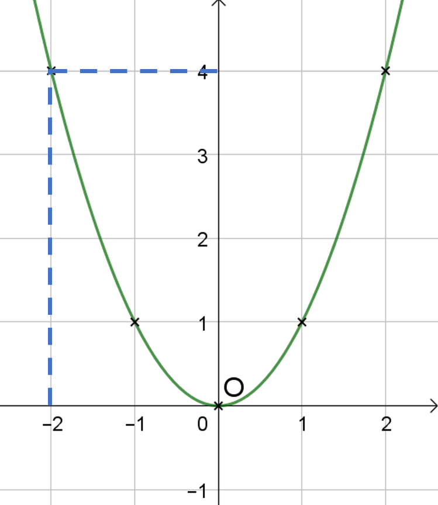
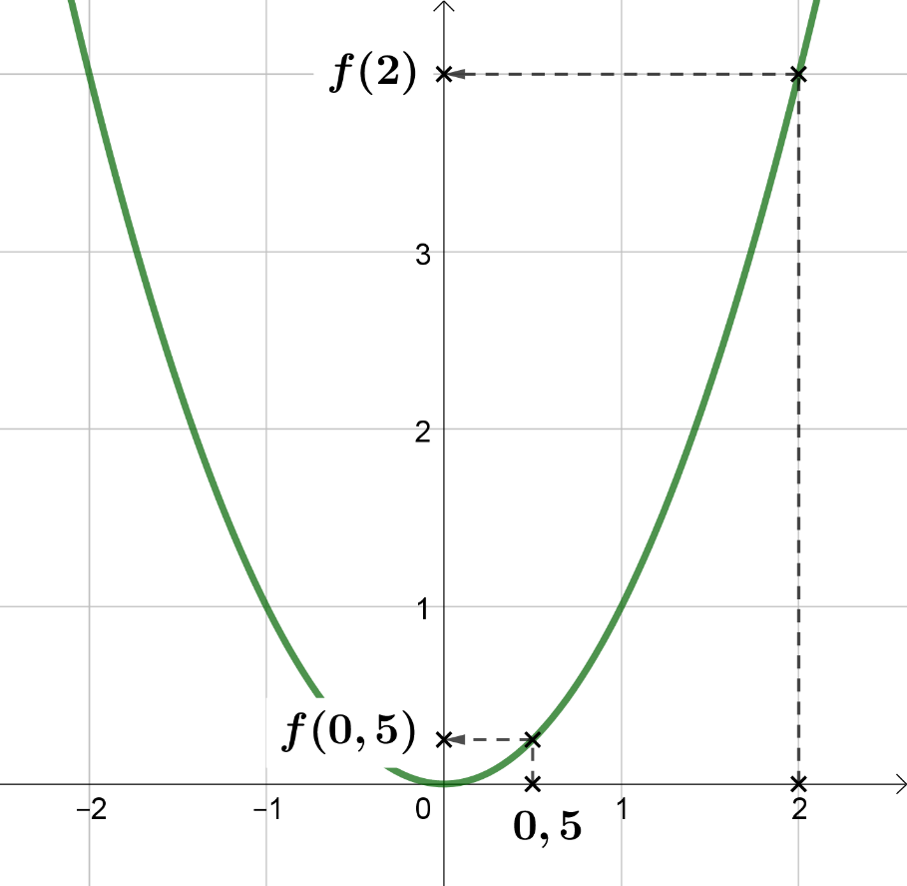
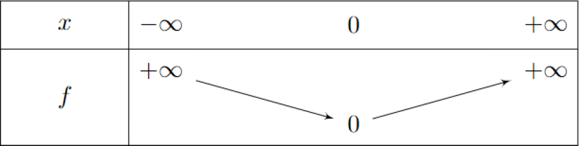
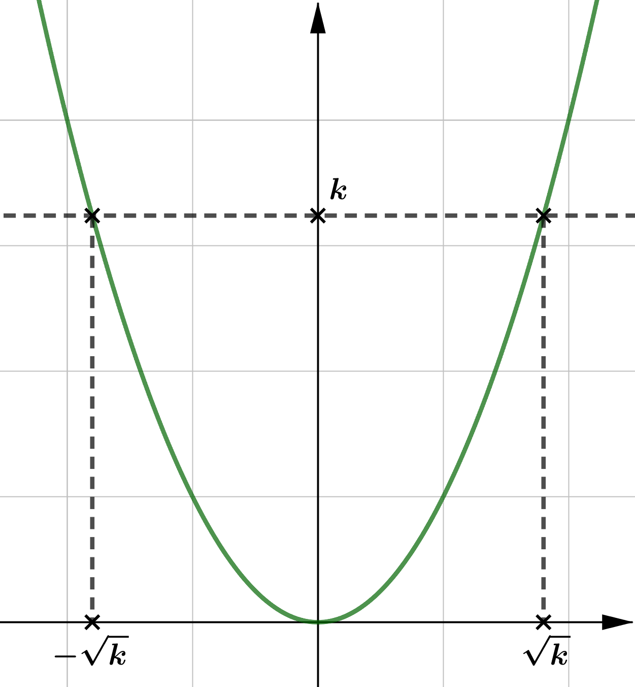
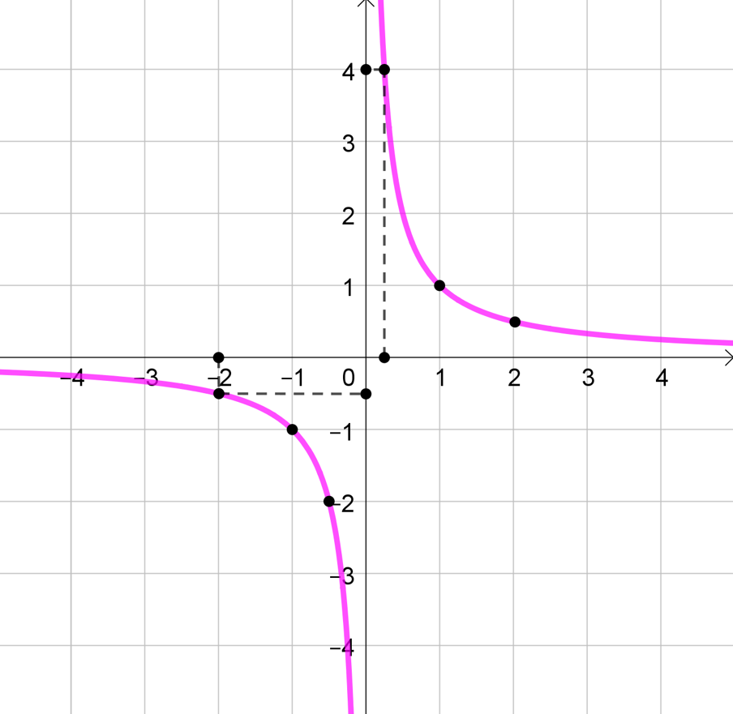
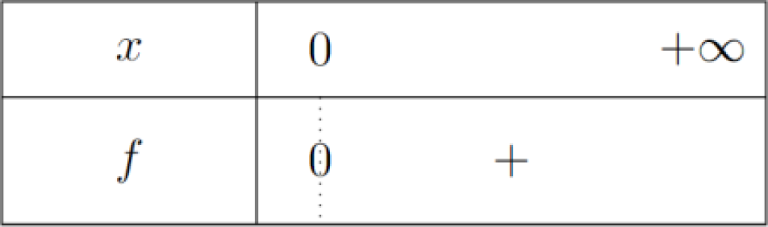

Fonctions de références
Rappel : Fonction du 1er degré / Valeur absolue
Définition : Fonction du 1er degré
Definition
Une fonction de la forme $\boxed{f(x)=\cbox{pink}{a}x+\cbox{lightgreen}{b}}$ est appelée fonction du 1er degré.
- $\cbox{pink}{a}$ : Pente ou coefficient directeur $\quad\rarr a=\cfrac{\Delta y}{\Delta x}$
- $\cbox{lightgreen}{b}$ : Ordonnée à l’origine $\quad\rarr b=f(0)$
Exemple
Soit $f(x)=\cfrac{-1}{2}x+1$ définie sur $\R$.
$f$ est une fonction du 1er degré avec $~\cbox{pink}{a}=\cfrac{-1}{2}~$ et $~\cbox{lightgreen}{b}=1$.
- Calcul d’image
$$f(\cbox{lightblue}{4})\quad=\cfrac{-1}{2}\times \cbox{lightblue}{4}+1\quad=-2+1=-1$$
- Tableau de valeurs et représentation
$$ \begin{array}{|c|c|c|c|c|}\hline \rule[-3mm]{0mm}{8mm}x & -2 & ~0~ & 1 & 4 \\ \hline \rule[-3mm]{0mm}{8mm}f(x) & 2 & 1 & 0.5 & -1 \\ \hline \end{array} $$
Propriétés : Fonction du 1er degré
Propriete
Sens de varitions
Soit $f(x)=ax+b$ définie sur $\R$.
- Si $~a\gt 0~$ alors $~f~$ est croissante sur $\R$
- Si $~a\lt 0~$ alors $~f~$ est décroissante sur $\R$
- Si $~a=0~$ alors $~f~$ est constante sur $\R$

Propriete
Signe de $f$
- Pour $x=\cfrac{-b}{a}$, on a $f(x)=0$.
- Si $~a\gt 0~$ alors $~f~$ est négative sur $\left]-\infty ; \cfrac{-b}{a}\right[$ et positive sur $\left]\cfrac{-b}{a} ; +\infty\right[$
$~$
- Si $~a\lt 0~$ alors $~f~$ est positive sur $\left]-\infty ; \cfrac{-b}{a}\right[$ et négative sur $\left]\cfrac{-b}{a} ; +\infty\right[$

Valeur absolue
Definition
Soit $x\in\R$. On a :
$$\boxed{\abs{x}=\begin{cases}x&\text{si }~x\gt 0\\-x&\text{si }~x\lt 0 \end{cases}}$$
Exemple
C’est la valeur “positive” du nombre donné :
$$\abs{3}=3\qquad\abs{-1}=1\qquad\abs{-2.51}=2.51\qquad\abs{-\pi}=\pi$$
Prop
Représentation de $f(x)=\abs{ x}$
$$ \begin{array}{|c|c|c|c|c|c|c|c|}\hline \rule[-3mm]{0mm}{9mm}x & -3 & -2 & -1 & 0 & 1 & 2 & 3 \\ \hline \rule[-3mm]{0mm}{9mm}f(x)=\abs{x} & 3 & 2 & 1 & 0 & 1 & 2 & 3 \\ \hline \end{array} $$

Fonction carré
Définition : Fonction carré
Definition
La fonction carré est définie sur $\R$ par $\qquad \boxed{f(x)=x^2}$
Propriétés : Fonction carré
Prop
Tableau de valeurs et représentation
$$ \begin{array}{|c|c|c|c|c|c|c|c|c|c|}\hline \rule[-3mm]{0mm}{9mm} x & -3 & -2 & -1 & -0.5 & 0 & 0.5 & 1 & 2 & 3 \\ \hline \rule[-3mm]{0mm}{9mm}f(x) & 9 & 4 & 1 & 0.25 & 0 & 0.25 & 1 & 4 & 9 \\ \hline \end{array} $$

Rem
- La fonction carré n’est pas une fonction linéaire.
- La représentation graphique de la fonction carré est une parabole de sommet $O$.
- La représentation graphique de la fonction carré est symétrique par rapport à l’axe des ordonnées.
Methode
Comparer des images
Comparons, graphiquement $f(0.5)$ et $f(2)$
On constate que : $f(0.5)\lt f(2)$
En effet, on a
- $f(2)=2^2=4$
- $f(0.5)=0.5^2=0.25$
Donc $~f(2)\gt f(0.5)$

Comparons, graphiquement $f(-1.5)$ et $f(-1)$
On constate que : $f(-1.5)\gt f(-1)$
En effet, on a
- $f(-1.5)=(-1.5)^2=2.25$
- $f(-1)=(-1)^2=1$
Donc $~f(-1.5)\gt f(-1)$

Méthode sans graphique
Soit $f(x)=x^2$.$\quad$ Comparons $f(-0.5)$ et $f(-3)$
On a
- $f$ décroissante sur $\left]-\infty;0\right[$
- $(-0.5)\in\left]-\infty;0\right[~$ et $~(-3)\in\left]-\infty;0\right[$
- $(-3)\lt (-0.5)$
Donc $\boxed{f(-3)\gt f(-0.5)}$
En effet, $(-3)^2=9\quad\gt \quad(-0.5)^2=0.25$
Prop
Signe
La fonctions carré est positive sur $\R$
Prop
Sens de variations

Methode
Résoudre des équations du type $x^2=k$
Résoudre $x^2=5$ revient à trouver tous les $x$ dont le carré est égal à $5$
On a : $\qquad x^2=5\Lrarr\begin{cases}x=\sqrt{5}\\x=-\sqrt{5}\end{cases}$
De manière générale, $x^2=k$ (avec $k\ge 0$) possède 2 solutions :
$$\boxed{x^2=k\Lrarr\begin{cases}x=\sqrt{k}\\x=-\sqrt{k}\end{cases}}$$

Fonction cube
Définition : Fonction cube
Definition
La fonction cube est définie sur $\R$ par $f(x)=x^3$
Propriétés : Fonction cube
Prop
- Tableau de valeurs
$$\begin{array}{|c|c|c|c|c|c|c|}\hline \rule[-3mm]{0mm}{9mm}x & -2 & -1 & 0 & 1 & 2 & 3 \\ \hline \rule[-3mm]{0mm}{9mm}f(x) & (-2)^3=-8 & (-1)^3=-1 & 0^3=0 & (1)^3=1 & 2^3=8 & 3^3=27\\ \hline \end{array}$$
- Représentation : La représentation graphique de la fonction cube est symétrique par rapport à l’origine du repère.
Prop
Signe

Prop
Sens de variations

Methode
Comparer des images
Soit $f(x)=x^3$.$\quad$ Comparons $f(0.5)$ et $f(2)$
On a :
- $f$ est croissante sur $\R$
- $0.5\lt 2$
Donc $\boxed{f(0.5)\lt f(2)}$
En effet, $\quad 0.5^3=0.125\quad\lt \quad 2^3=8$
Position relatives de $y=x~$ , $~y=x^2~$ et $~y=x^3$
Prop
- Si $ x\ge 1$, on a $\tc{blue}x3\tc{black}\ge\tc{lightgreen}x2\tc{black}\ge\tc{red}x$
- Si $ x\le 1$, on a $\tc{blue}x3\tc{black}\le\tc{lightgreen}x2\tc{black}\le\tc{red}x$
Demo
- Cas n°1 : $\quad \boxed{x\ge 1}\qquad$ Étudions le signe de $(x^2-x)$ et de $(x^3 -x^2)$
- $(x^2 -x)=x(x-1)~$ donc $\begin{cases}x\gt 0\\x-1\ge 0\end{cases}\Rarr(x^2 -x)\ge 0\Lrarr\boxed{x^2\ge x}$
- $(x^3 -x^2 )=x^2 (x-1)~$ donc $\begin{cases}x^2 \gt 0\\x-1\ge0\end{cases}\Rarr(x^3 -x^2 )\ge 0\Lrarr \boxed{x^3 \ge x^2}$
Donc si $\quad\boxed{x\ge 1 \Rarr x^3 \ge x^2 \ge x}$
- Cas n°2 : $\quad \boxed{0\le x\le 1}\qquad$ Étudions le signe de $(x^2 -x)$ et $(x^3 -x^2)$
- $(x^2 -x)=x(x-1)~$ donc $\begin{cases}x\gt 0\\x-1\le 0\end{cases}\Rarr(x^2 -x)\le 0\Lrarr\boxed{x^2 \le x}$
- $(x^3 -x^2 )=x^2 (x-1)~$ donc $\begin{cases}x^2 \ge 0\\x-1\le 0\end{cases}\Rarr(x^3 -x^2 )\le 0\Lrarr\boxed{x^3 \le x^2 }$
Donc si $~\boxed{0\le x\le1 \Rarr x^3\le x^2\le x}$
Fonction inverse
Définition : Fonction inverse
Definition
La fonction inverse est définie sur $\R-{0}$ par $\boxed{f(x)=\cfrac{1}{x}}$
Rem
-
$\R-{0}$ désigne l’ensemble des nombres réels sauf $0$, c’est-à-dire :
$$\left]-\infty;0\right[\cup\left]0;+\infty\right[$$
-
On peut aussi noter $\R-{0}=\R^{*}$.
-
La fonction inverse n’est pas définie en $0$.$\qquad$(division par $0$ impossible)
Propriétés : Fonction inverse
Prop
Tableau de valeurs et représentation
On a, par ex. : $f(-2)=\cfrac{1}{-2}=-0.5$
$$ \begin{array}{|c|c|c|c|c|c|c|c|c|c|}\hline \rule[-3mm]{0mm}{9mm} x & -3 & -2 & -1 & -0.5 & 0.25 & 0.5 & 1 & 2 & 3 \\ \hline \rule[-3mm]{0mm}{9mm}f(x) & \cfrac{-1}{3} & \cfrac{-1}{2} & -1 & -2 & 4 & 2 & 1 & \cfrac{1}{2}=0.5 & \cfrac{1}{3} \\ \hline \end{array} $$

Rem
La représentation graphique de la fonction inverse est une hyperbole de centre $O$ et est symétrique par rapport à l’origine.
Prop
Signe
Prop
Sens de variations
Methode
Comparer des images
Soit $f(x)=\cfrac{1}{x}$.$\quad$ Comparons $f(0.5)$ et $f(3)$
On a :
- $f$ décroissante sur $\left]0;+\infty\right[$
- $0.5\in\left]0;+\infty\right[~$ et $~3\in\left]0;+\infty\right[$
- $0.5\lt 3$
Donc $\boxed{f(0.5)\gt f(3)}$, en effet $\cfrac{1}{0.5}=2\gt \cfrac{1}{3}\approx 0.333\ldots$
Methode
Résoudre des équations du type $\cfrac{1}{x}=k$
Résoudre $\cfrac{1}{x}=5$ c’est trouver tous les $x$ dont l’inverse est $5$.
On a :
$$\cfrac{1}{x}=5\quad\Lrarr\quad\cfrac{1}{x}=\cfrac{5}{1}\quad\Lrarr\quad 5\times x=1\times 1\quad\Lrarr\quad\boxed{x=\cfrac{1}{5}}$$
De manière générale, $\cfrac{1}{x}=k$ (avec $x\neq 0$ et $k\neq 0$) possède 1 solution : $$\boxed{\cfrac{1}{x}=k\quad\Lrarr\quad x=\cfrac{1}{k}}$$
Exemple
$$\cfrac{1}{x}=\cfrac{2}{3}\quad\Lrarr x=\cfrac{~1~}{\cfrac{2}{3}}\quad\Lrarr x=\cfrac{3}{2}$$
Fonction racine carrée
Définition : Fonction racine carrée
Definition
La fonction racine carrée est définie sur $\left[0;+\infty\right[$ par \boxed{ f(x)=\sqrt{x} }
Rem
- La fonction racine carrée est définie pour des valeurs de $x$ positives. $\rarr\mathcal{D}_f=\R^{+}$
- La fonction racine carrée est positive sur $\mathcal{D}_f$. $\rarr\forall x\in\mathcal{D}_f,\sqrt{x}\ge 0$
Propriétés : Fonction racine carrée
Prop
Tableau de valeurs
$$ \begin{array}{|c|c|c|c|c|c|c|c|}\hline \rule[-3mm]{0mm}{9mm}x & 0 & 1 & 2 & 3 & 4 & 5 & … \\ \hline \rule[-3mm]{0mm}{9mm}f(x) & \sqrt{0}=0 & \sqrt{1}=1 & \sqrt{2}\approx1.414… & \sqrt{3}\approx1.732… & \sqrt{4}=2 & \sqrt{5}\approx 2.23… & … \\ \hline \end{array} $$
Représentation
Prop
Signe

Prop
Sens de variations
Methode
Comparer des images
Soit $f(x)=\sqrt{x}$.$\quad$ Comparons $f(0.5)$ et $f(3)
On a :
- $f$ croissante sur $\R^{+}$
- $0.5\in\R^{+}~$ et $~3\in\R^{+}$
- $0.5\lt 3$
Donc $\boxed{f(0.5)\lt f(3)}$.
En effet, $\sqrt{0.5}\approx 0.707…\lt\sqrt{3}\approx 1.732…$
Methode
Résoudre des équations du type $\sqrt{x}=k$
Résoudre $\sqrt{x}=5$ revient à trouver tous les nombres dont la racine carrée est $5$.
On a : $\sqrt{x}=5\quad\Lrarr\quad\left(\sqrt{x}\right)^2 =5^2 \quad\Lrarr\quad\boxed{x=25}$
De manière générale, $\sqrt{x}=k~$ (avec $k\ge 0$ et $x\ge 0$) possède 1 solution : $$\boxed{\sqrt{x}=k\quad\Lrarr\quad x=k^2}$$
Exemple
$$\sqrt{x+1}=2\quad\Lrarr\quad(x+1)=2^2=4\quad\Lrarr\quad x=3$$
Fonction paire/impaire
Définition : parité d’une fonction
Definition
- Une fonction $f$ est paire lorsque pour tout réel $x\in\mathcal{D}_f$, on a :
$$f~\text{paire}~\iff~\begin{cases}(-x)\in\mathcal{D}_f\\f(-x)=f(x)\end{cases}$$
- Une fonction $f$ est impaire lorsque pour tout réel $x\in\mathcal{D}_f$, on a :
$$f~\text{impaire}~\iff~\begin{cases}(-x)\in\mathcal{D}_f\\f(-x)=-f(x)\end{cases}$$
Exemple
La fonction $f(x)=x^2$ définie sur $\R$ est paire car, pour tout $x\in\R$, on a :
$$\begin{aligned}f(-x)=(-x)^2 &=(-1\times x)^2 \\&=(-1)^2 \times x^2 \\&=x^2 =f(x)\end{aligned}$$
Exemple
La fonction $f(x)=\cfrac{1}{x}$ définie sur $\R^* $ est impaire car, pour tout $x\in\R^{*}$, on a :
$$\begin{aligned}f(-x)=\cfrac{1}{-x}&=-\cfrac{1}{x}\\&=-\left(\cfrac{1}{x}\right)=-f(x)\end{aligned}$$
Rem
- Une fonction peut être ni paire, ni impaire. Ex: $f(x)=\sqrt{x}$
- La représentation d’une fonction paire est symétrique par rapport à l’axe des ordonnées.
- La représentation d’une fonction impaire est symétrique par rapport à l’origine du repère
| Fonction paire | Fonction impaire |
|---|---|
 |
 |
Methode
Étudier la parité d’une fonction
Soit $f(x)=2x^2-1$ définie sur $\R$
Pour tout $x\in\R$, on a :
$$\begin{aligned}f(-x)&=2(-x)^2-1\\ &=2\times (-1\times x)^2-1\\ &=2\times (-1)^2\times x^2-1\\ &=2x^2-1\qquad=f(x)\end{aligned}$$
Donc $f$ est paire, sa représentation graphique est symétrique par rapport à l’axe des ordonnées.
Représentation des fonctions de références